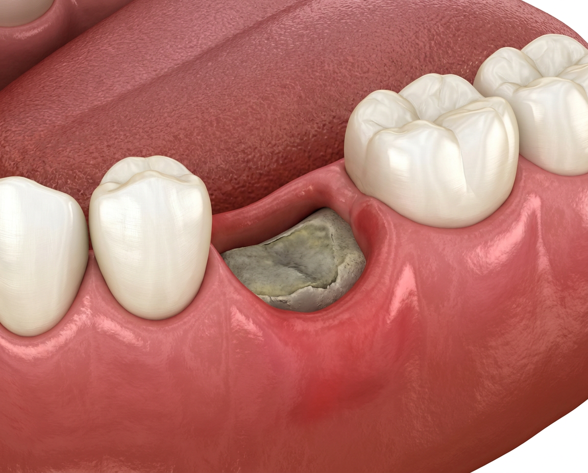
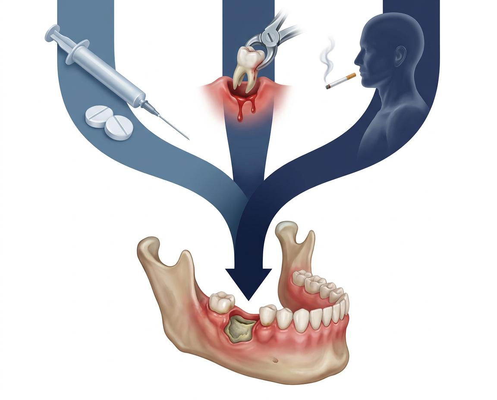
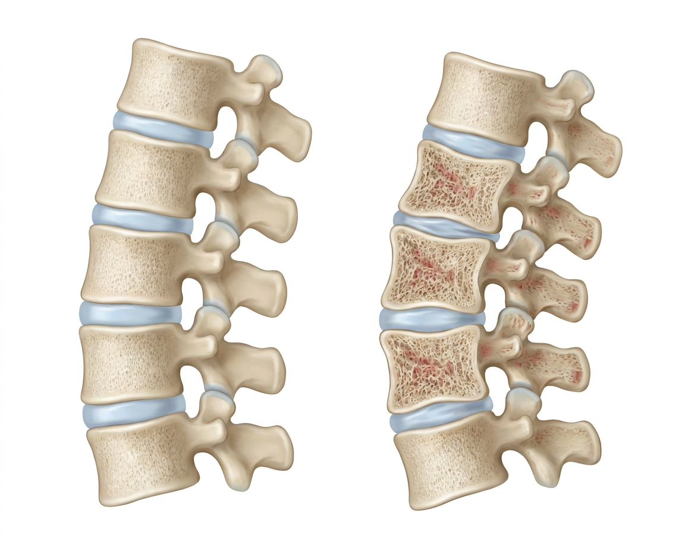
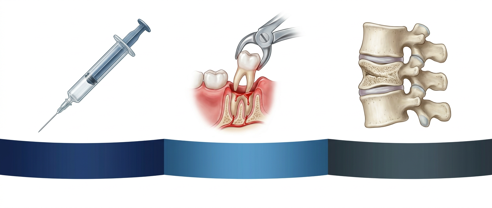

필요한 치료는 미루지 말고, 약 조정은 담당 의사와 상의하세요.
잇몸뼈를 건드리는 치료인지 먼저 확인하면 약 조정이 필요한지 판단할 수 있습니다.
턱뼈가 드러나거나 상처가 계속 남는 드문 문제를 살펴야 합니다.

골다공증 치료용과 암 치료용 주사는 위험의 크기가 다릅니다.
| 약 | 어떤 약인가 | 턱뼈 문제가 생기는 수 | 치과 치료 전에 |
|---|---|---|---|
| 약을 쓰지 않는 분 | 비교 기준 | 1만 명당 0~2명 | — |
| 먹는 골다공증약 | 알렌드로네이트 등 · 매주·매달 먹는 약 | 1만 명당 2~5명 | 대개 계속 드십니다 · 쉴지는 처방 의사가 정함 |
| 1년에 한 번 맞는 주사 | 졸레드론산 · 1년에 1회 | 1만 명당 2명 이하(자료마다 다름) | 마지막 주사 날짜를 알리고, 시술 시점과 다음 주사를 함께 정함 |
| 프롤리아 | 6개월마다 맞는 주사 | 1만 명당 4~30명 | 마지막 주사 날짜로 시점 계획 |
| 암 치료용 뼈 주사 | 4주마다 · 골다공증 용량의 수십 배 | 100명 중 1~15명 | 암 담당 주치의와 먼저 상의 |
입안 염증을 관리하고 치과 치료 계획을 함께 세우는 것이 중요합니다.

약이 몸에 남는 시간이 달라 치과 치료 전 확인할 내용도 다릅니다.
주사를 중단하면 척추 골절이 늘 수 있어 다음 날짜를 함께 정해야 합니다.

프롤리아를 맞는 분은 마지막 주사 뒤 3~4개월 무렵을 의료진과 상의합니다.

마지막 주사일, 발치 예정일, 다음 주사일을 함께 확인합니다.
| 이럴 때 | 이렇게 합니다 |
|---|---|
| 계획해서 이를 뽑을 때 | 마지막 주사 뒤 3~4개월에 — 잘 아물고, 아직 반동이 올 시기는 아닙니다 |
| 마지막 주사가 5개월 넘게 지났을 때 | 더 기다리지 말고, 치과와 내과가 발치 날짜와 다음 주사 날짜를 함께 빨리 정합니다 |
| 많이 아프거나 곪았을 때 | 시점을 따지지 말고 바로 치료합니다 — 감염을 두는 쪽이 더 나쁩니다 |
| 이를 뽑은 뒤 다음 주사 | 잇몸이 아물면(보통 6~8주) 맞습니다 — 뼈가 다 찰 때까지 기다리지 않습니다 |
| 넘기지 말 선 | 6개월 정시가 목표 · 7개월은 넘기지 않기 · 권고안의 마지막 한계선은 총 9개월 |
임플란트 계획과 턱뼈 위험을 한 번의 검사 결과만으로 정할 수는 없습니다.
약 이름·치료 목적·마지막 투여일·예정된 치과 치료를 함께 알려 주세요.
QR을 스캔하면 같은 자료를 휴대폰에서 다시 열 수 있습니다